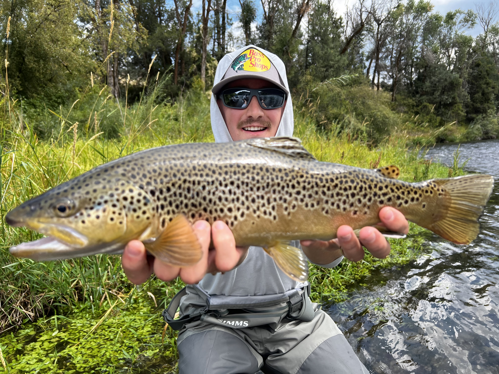

Hobby No. 1
Fly Fishing
There's nothing like standing knee-deep in a cold river at dawn, watching a dry fly drift over a riffle and disappear in a sudden swirl. Fly fishing isn't just a hobby — it's a discipline. Reading water, matching the hatch, presenting the fly without spooking the fish. Every outing is a puzzle worth solving.
I've fished rivers across Utah and the intermountain west, mostly chasing brown trout and cutthroats. Below is a breakdown of some of my favorite rivers and the flies that work on each.
Favorite Rivers & Flies
-
Provo River — Utah's premier tailwater
- Zebra Midge (#18–22)
- RS2 (olive, #20)
- Parachute Adams (#16)
-
Green River — A section below Flaming Gorge
- San Juan Worm (red, #14)
- Pheasant Tail Nymph (#16–18)
- Elk Hair Caddis (#14)
-
Logan River — Small stream canyon fishing
- Stimulator (#12)
- Copper John (#16)
- Woolly Bugger (black, #8)
-
Henry's Fork (Idaho) — Technical dry fly water
- Pale Morning Dun (#18)
- CDC Sparkle Dun (#18)
- Blue-Winged Olive (#20)

A healthy brown trout — caught and released
Utah Fishing Activity — Live Tableau Viz
Explore fishing license and activity data across Utah counties. Interact with the chart below.

⚠️ Replace the name param above with your chosen Tableau Public viz path.